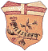
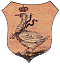
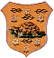

|

La Comparsa di questo Palio era composta dal Duce (o Capitano come appare nei fogli prestampati del Comune), due Alfieri, il Tamburino, il Figurino e quattro Paggi. Le Contrade che non prendevano parte alla corsa non erano rappresentate.

 BRUCO
Duce - Vannini Santi, via Vallerozzi 27
Alfiere - Magnelli Sabatino, via degli Orti 11
Alfiere - n.r.
Barberesco - Gambetti Lorenzo, piazza d'Ovile 2
Tamburo - n.r.
Paggio - n.r.
Paggio - n.r.
Paggio - n.r.
Paggio - n.r.
 GIRAFFA GIRAFFA
Duce - Santini Angelo, via delle Vergini 39
Alfiere - Silei G.Battista
Alfiere - n.r.
Barberesco - Stacchini Giulio, via Baroncelli
Tamburo - Vannini Raffaello
Paggio - n.r.
Paggio - n.r.
Paggio - n.r.
Paggio - n.r.
 ISTRICE ISTRICE
Duce - Cappelli Giuseppe, via dei Pispini 47
Alfiere - Bruchi Domenico, via Camollia
Alfiere - n.r.
Barberesco - n.r.
Tamburo - n.r.
Paggio - n.r.
Paggio - n.r.
Paggio - n.r.
Paggio - n.r.
 LEOCORNO LEOCORNO
Duce - Chiosi Vincenzo, via del Rialto 1
Alfiere - n.r.
Alfiere - n.r.
Barberesco - n.r.
Tamburo - n.r.
Paggio - Domeniconi Emilio
Paggio - Sciabilli Amedeo
Paggio - Bellaccini Giulio
Paggio - Casprini Flavio
 LUPA LUPA
Duce - Milani Angelo, via delle Scalelle 3
Alfiere - Muzzi Angelo, via Vallerozzi
Alfiere - n.r.
Barberesco - n.r.
Tamburo - n.r.
Paggio - n.r.
Paggio - n.r.
Paggio - n.r.
Paggio - n.r.
 NICCHIO NICCHIO
Duce - Lorenzetti Cesare (calzolaio), via Fiera Nuova 5
Alfiere - Pasquali Sabatino, via Dell'Oliviera 8
Barberesco - n.r.
Tamburo - n.r.
Paggio - n.r.
Paggio - n.r.
Paggio - n.r.
Paggio - n.r.
 OCA
Duce - Martini Oreste, via dei Pittori 5
Alfiere - Pacini Gaetano, via Benincasa
Alfiere - Silei Angelo, via Benincasa 27
Barberesco - Tancredi Pietro, via Benincasa 31
Tamburo - Marzi Eugenio, via Benincasa 18
Paggio - Testini Assuero, via Benincasa 31
Paggio - Martini Licurgo, via della Galluzza 21
Paggio - Tacchetti Alfredo, via Benincasa 24 - 2° piano
Paggio - Brizzi Alfredo, via Benincasa 24 - 6° piano
 TARTUCA
Duce - Cortecci Enrico (calzolaio), via degli Orbachi
Alfiere - Tozzi Cesare (fornaio), via Duprè
Alfiere - Tozzi (figlio di Cesare), via Duprè
Barberesco - Cannoni Modesto (calzolaio), via Stalloreggi
Tamburo - n.r.
Figurino - n.r.
Paggio - Bucci Giuseppe (falegname), di Siena
Paggio - Ciali Luigi (sarto), di Siena
Paggio - Bianciardi Angiolo (colono), fuori Porta Tufi
Paggio - n.r., fuori Porta Tufi
 TORRE TORRE
Duce - Grazzini G.Battista, via delle Scotte 6 e 8
Alfiere - n.r.
Alfiere - n.r.
Barberesco - n.r.
Tamburo - n.r.
Paggio - n.r.
Paggio - n.r.
Paggio - n.r.
Paggio - n.r.
 VALDIMONTONE VALDIMONTONE
Duce - Viti Giulio, via di Pantaneto 9
Alfiere - Ricci Ansano, via Salicotto 118
Alfiere - Bruschelli Vittorio, via Romana 7
Barberesco - n.r.
Tamburo - n.r.
Paggio - Lamioni Giuseppe, via dei Servi 16
Paggio - Fallaci Giuseppe, via di Valli 9
Paggio - Lamioni Cesare, via dei Servi 12
Paggio - Staccioli Carlo, via dei Servi 11

Archivio Storico del Comune di Siena - Postunitario X.A - Cat.X - 0010
|